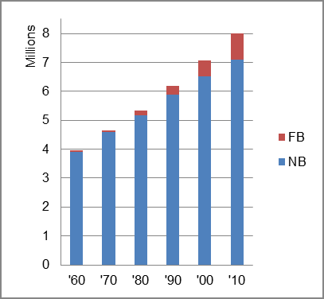
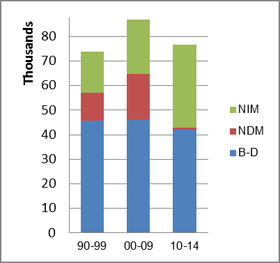
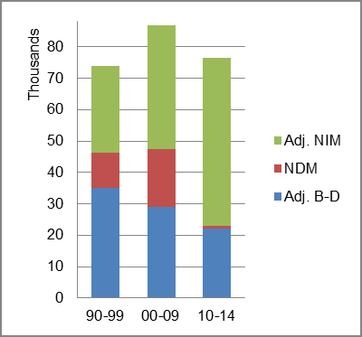

The foreign-born (FB) population increased from 48,185 in 1960 to 911,119 in 2010. That was an increase of 1790.9 percent. The foreign-born share increased from 1.2 percent in 1960 to 11.4 percent in 2010.
The share of the overall population that was native-born (NB) increased by 80.9 percent.
Virginia: Population 1960-2010 
The first chart below shows the three population change factors for three periods adjusted for annual average amounts. The largest factor contributing to population increase in all periods was B-D.
The second chart shows the same data but with an adjustment to reflect births to immigrants shifted to NIM. In it, NIM surpassed B-D as the largest contributor of population in the two most recent periods.
Virginia: Sources of Population Change 1990-2014 Virginia: Sources of Population Change (Adjusted) 1990-2014  
B-D NDM NIM B-D NDM NIM 90-'99 62.0% 15.1% 22.9% 90-'99 47.6% 15.1% 37.3% 00-'09 53.1% 21.4% 25.5% 00-'09 33.2% 21.4% 45.4% 10-'14 55.0% 1.0% 43.9% 10-'14 28.9% 1.0% 70.1%